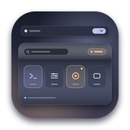

Hallmark Dusk 暮色主题版 v1.0.0菜单栏，归于暮色。
鼠标轻轻掠过顶部入口，所有隐藏图标在系统菜单栏正下方展开为烟熏玻璃二级抽屉，离开即刻归于平静。
支持 macOS 14 Sonoma、macOS 15 Sequoia 与 macOS 26 Tahoe，Apple Silicon 原生构建。
二级烟熏收纳栏
- CleanShot X左键截图，右键历史记录 常驻菜单栏 12ms
- Docker Desktop6 个容器运行中 二级抽屉 14ms
- WeChat辅助功能确认未读提醒 3 条未读 11ms
- Tailscale已连接 novarocks 节点 常驻菜单栏 13ms
- Raycast支持右键直接唤醒上下文菜单 二级抽屉 10ms
四项底层打磨，一气呵成。
从悬浮触发到右键穿透，再到退出归位，每一步都遵循 macOS 原生窗口坐标。
二级抽屉事件路由矩阵
| 图标类型 | 派发耗时 | 状态 | 穿透机制 |
|---|---|---|---|
| AppKit NSStatusItem | 11ms | CFMachPort 原生鼠标事件流 | |
| SwiftUI MenuBarExtra | 13ms | 非激活 NSPanel 保持弹窗焦点 | |
| Electron / Chrome 托盘 | 15ms | RightMouseUp + 合成 Ctrl 左键回退 | |
| Option + 点击扩展菜单 | 12ms | 实时读取 HID 硬件修饰键掩码 | |
| 双击与快捷键回车触发 | 10ms | 保留原始 clickCount 与键盘导航 |
悬浮自动隐藏 vs 图钉整理锁定
常规浏览态
毫秒级悬浮与缓冲
150ms / 250ms
图钉整理态
自动隐藏全面暂停
锁定常开
整理模式状态提示
暖杏色胶囊「整理锁定中，自动隐藏已暂停」
智能排序与通配规则
- 有确认未读消息的应用自动排在抽屉首位
- 匹配 *Chrome* 与开发工具优先级设为 -10
- 实时镜像原图标徽标，排除壁纸背景色干扰
- 音乐歌词等高频动画图标忽略变化提醒
坐标归位与恢复验证
- 常驻图标坐标100%
- 折叠抽屉项目100%
- 刘海屏避让保护96%
- 退出归还顺序100%
- 崩溃恢复日志100%
两处细节，告别手忙脚乱。
无论是连续整理十几个图标，还是辨识真正的未读消息，都安静而准确。
Tuckbar 整理锁Pin Lock
整理锁定中：已切换 6 项，自动隐藏已暂停
点击二级菜单栏右上角的「整理」按钮后，即使鼠标移出抽屉或图标位置发生重排，面板也始终稳定停留在原位，直到你点击「完成整理」。
松弛有序的菜单栏整理体验
未读消息与视觉指纹分离
辅助功能语义提取 + 像素量化指纹
“只有应用明确声明未读数量时才显示暖杏色未读计数；电池百分比、时间跳动与背景色变化绝不误报为未读消息。”
3 条确认未读静默镜像动画
每一帧，都克制在毫秒之内。
连续 31 组窗口唤醒、跨屏重排与右键穿透基准测试，闲置时不占用一丝多余算力。
1
2
3
4
5
6
7
8
9
10
11
12
13
14
15
16
17
18
19
20
21
22
23
24
25
26
27
28
29
30
31
- 几何与交互断言通过
- 52,209
- 默认悬浮展开延迟
- 150ms
- 右键穿透平均耗时
- 14ms
- 后台闲置轮询开销
- 0%